Rio Branco
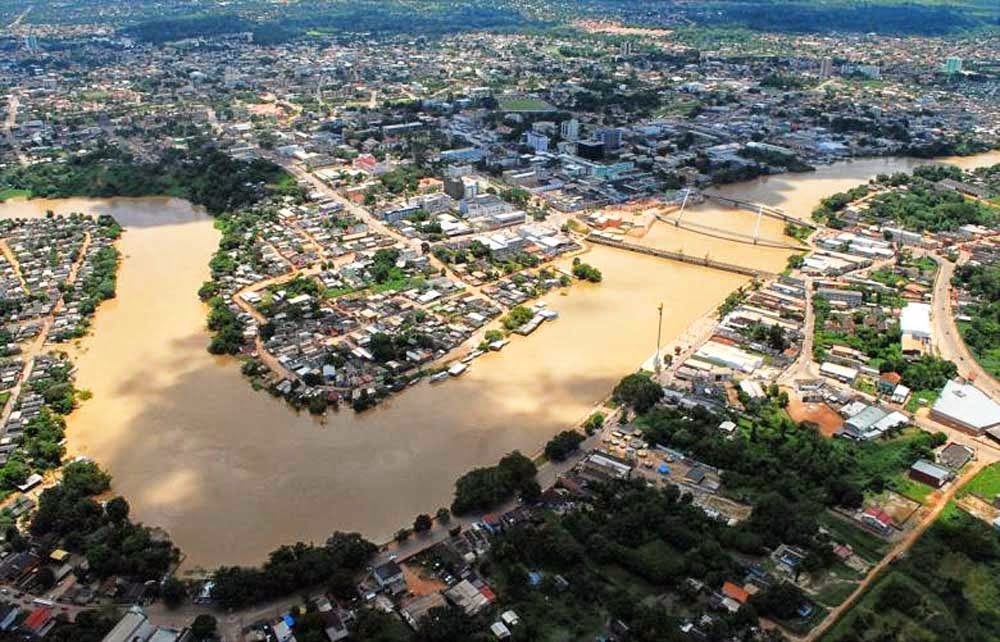Rio Branco, a capital do Acre, é um destino turístico em crescimento no Brasil, oferecendo uma combinação única de natureza exuberante, cultura rica e história local. Localizada na região Norte do Brasil, a cidade é conhecida por ser um ponto de encontro entre a Amazônia e o Brasil Central, o que a torna um lugar de grande interesse para ecoturistas, aventureiros e aqueles que buscam um contato mais próximo com a floresta e a biodiversidade. A cidade também possui um forte vínculo com a história da Borracha, sendo um ponto importante para o turismo histórico e cultural.
Além de sua proximidade com a natureza, Rio Branco também se destaca por sua gastronomia regional, que mistura influências indígenas, nordestinas e amazônicas, e por sua rica vida cultural, com festivais, músicas e danças típicas. Rio Branco, com seu ambiente tranquilo, é um destino ideal para quem busca fugir do turismo convencional e se aprofundar nas belezas naturais e culturais da Amazônia.
Principais pontos turísticos
- Palácio Rio Branco 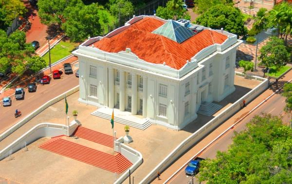
- Mercado Velho 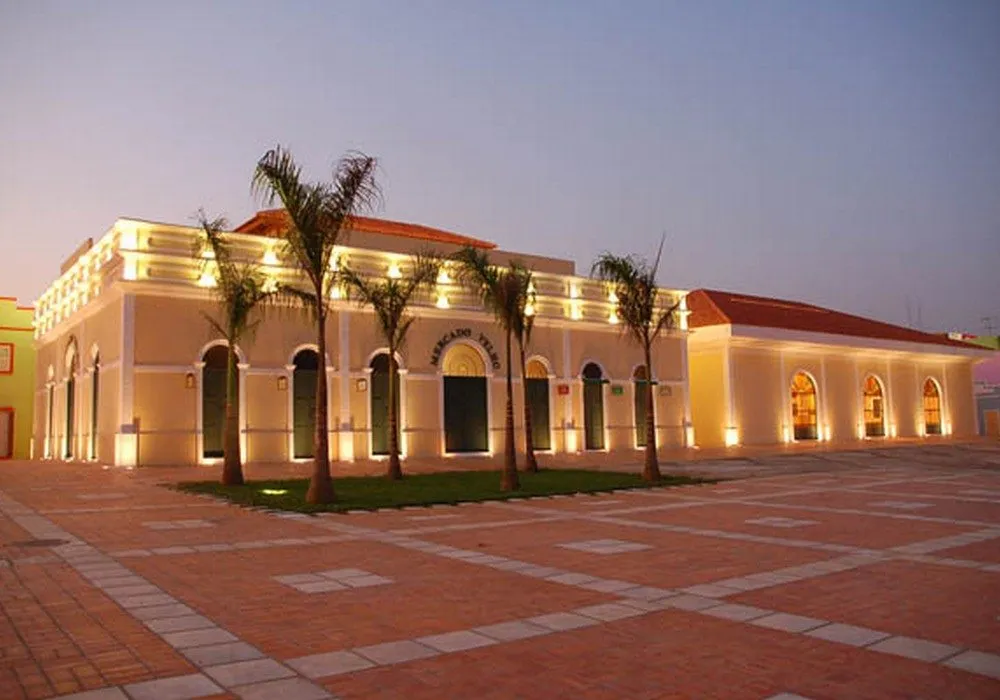
- Parque Zoobotânico 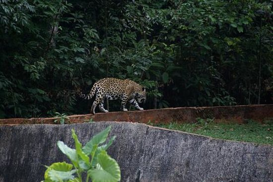
- Horto Florestal 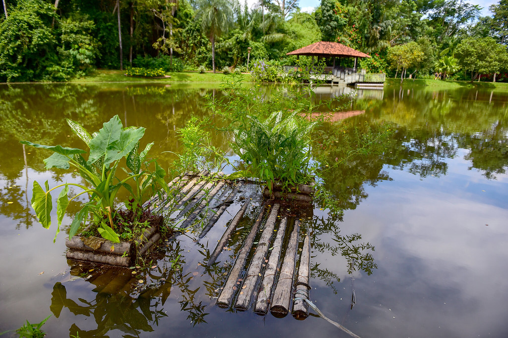
- Biblioteca da Floresta 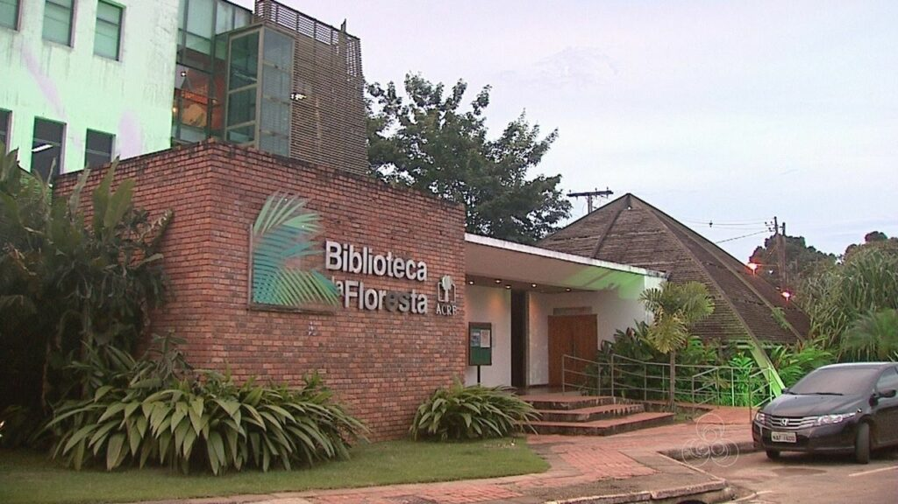
- Passarela Joaquim Macedo 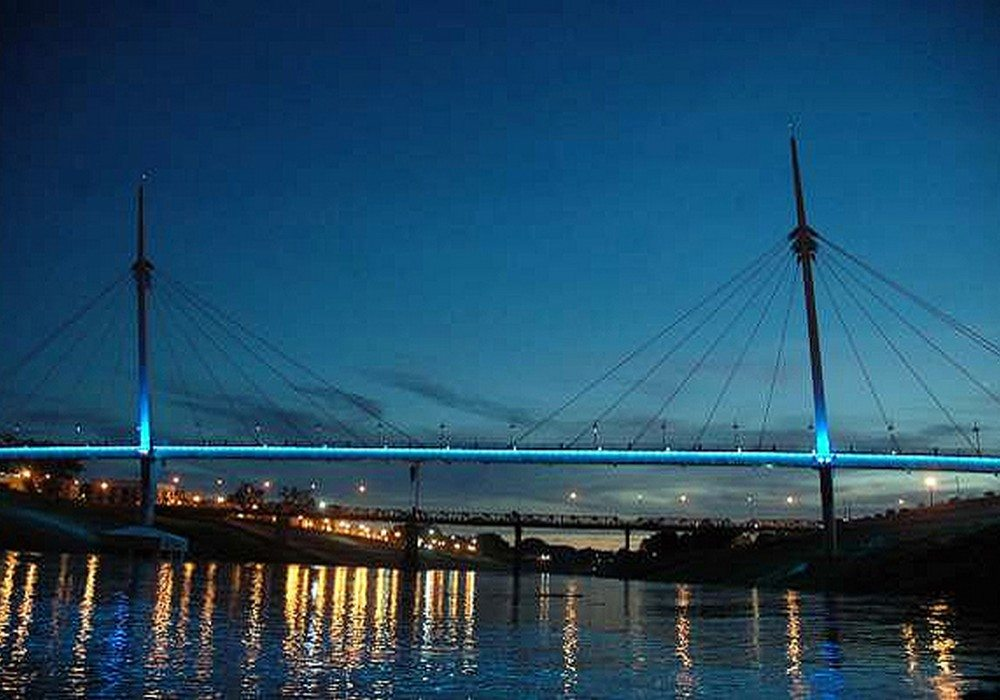
O Palácio Rio Branco é um marco histórico da cidade e um dos principais pontos turísticos de Rio Branco. Localizado no centro da cidade, o palácio foi inaugurado em 1930 e é um exemplo da arquitetura neoclássica, sendo sede do governo estadual até hoje. O palácio é aberto para visitas, proporcionando aos turistas uma imersão na história política e administrativa do Acre, além de oferecer uma vista privilegiada da cidade.
O Mercado Velho é um dos locais mais tradicionais e visitados de Rio Branco. Situado no centro histórico, o mercado é um excelente ponto para conhecer a cultura local, com uma variedade de artesanatos, produtos regionais e iguarias típicas. É também um ótimo lugar para experimentar a gastronomia acreana, como o famoso tacacá e o peixe assado. O ambiente rústico e acolhedor transmite a essência da cidade e da sua história.
O Parque Zoobotânico de Rio Branco é um dos espaços verdes mais visitados da cidade. Localizado nas proximidades do centro, o parque é uma ótima opção para quem deseja fazer caminhadas ao ar livre e observar a flora e fauna típicas da Amazônia. O parque conta com diversas trilhas, além de um zoológico que abriga animais da fauna amazônica, como macacos, onças e aves raras.
O Horto Florestal de Rio Branco é um espaço de preservação ambiental, localizado na área rural da cidade. Ideal para quem quer se conectar com a natureza, o local oferece trilhas ecológicas e áreas para piqueniques. O horto também serve como um centro de educação ambiental, promovendo atividades e workshops para a população e visitantes sobre a preservação da Amazônia e seus ecossistemas.
A Biblioteca da Floresta, localizada dentro do Horto Florestal, é um espaço cultural que promove a preservação da literatura e da cultura local. Com uma vasta coleção de livros sobre a região amazônica e a história do Acre, a biblioteca oferece uma rica experiência para quem deseja aprender mais sobre a história e cultura da região.
A Passarela Joaquim Macedo, também conhecida como Passarela do Rio Branco, é um ponto turístico pitoresco da cidade. Esta passarela de madeira, que atravessa o Rio Acre, oferece uma linda vista da cidade e é um ótimo local para passeios a pé ou de bicicleta, principalmente no final da tarde, quando o pôr do sol pinta o céu de cores deslumbrantes.
Principais pontos gastronômicos
- Mercado Velho 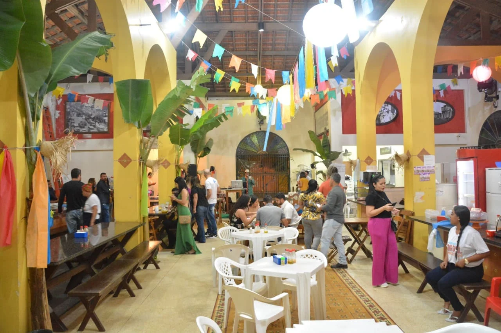
- Localização: Centro de Rio Branco.
- Mercado do Bosque 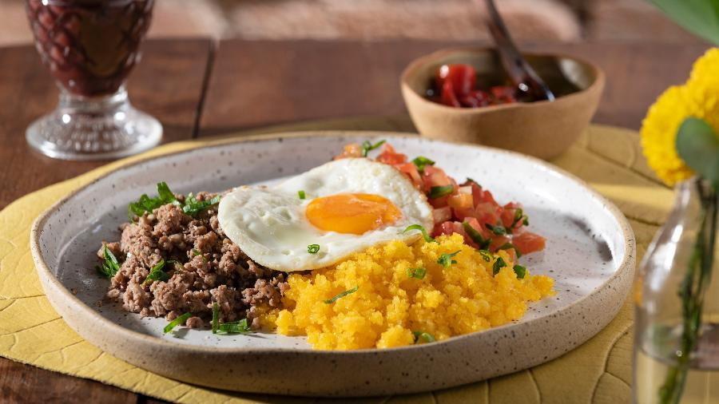
- Localização: Bairro Bosque.
- Jarude 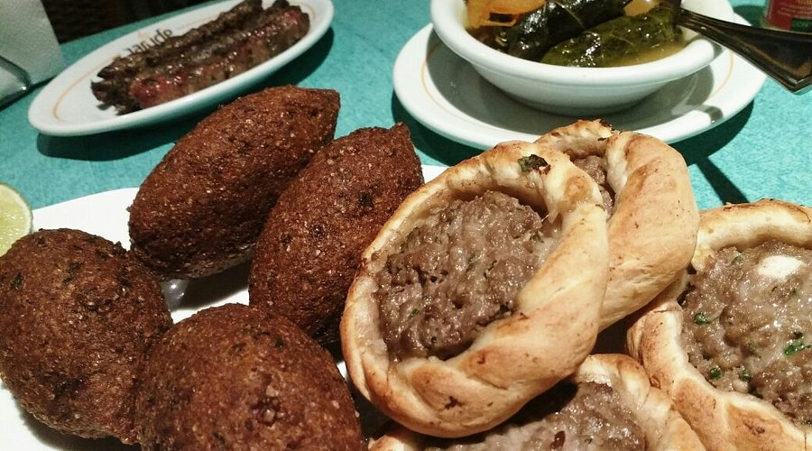
- Localização: Bairro Aviário.
- Casa do Rio Gastrobarzar 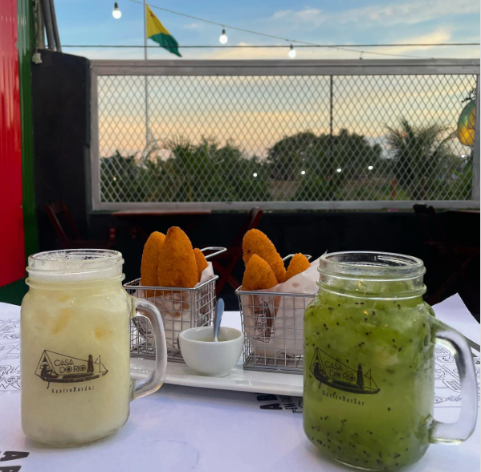
- Localização: Bairro Base.
O passeio ao Mercado Velho é também uma viagem gastronômica. Enquanto os barzinhos e os estabelecimentos mais descontraídos ficam ao ar livre, às margens do Rio Acre, os restaurantes no interior do Mercado são uma boa pedida para o almoço. São balcões simples e bem ao estilo “raiz” mesmo. No complexo interno, você vai encontrar diversas opções de restaurantes, como o Cantinho da Morena, onde dá pra comer pratos bem servidos por menos de R $20. Uma dica é provar o peixe mais famoso da região, o Tambaqui. Lá ele é servido com macaxeira (aipim ou mandioca) e sem espinha. Outro prato típico que você vai encontrar em praticamente todos os restaurantes do Mercado é a Rabada no Tucupi.
Aberta das 6h da manhã às 5h da tarde, a Praça de Alimentação do Mercado Velho fica lotada no horário do almoço.
Sabe aquele lanche pós-balada? Então! Um dos points para encontrá-lo é o Mercado do Bosque, mais um desses estabelecimentos “raiz”, que fica aberto 24 horas por dia. O local é uma galeria composta de várias lojas e conta com uma área de alimentação com uma série de restaurantes. Em todos você vai encontrar alguns dos pratos típicos da região, com preços em conta.
O Mercado do Bosque é o lugar da Baixaria. Calma! Esse é o nome de um dos pratos mais amados pelos acrianos. A refeição é composta de uma base de carne moída e farinha de milho, com cheiro-verde e um ovo frito por cima. Poderia ser um pratão de almoço, mas na verdade os moradores têm o costume de comê-lo no café da manhã.
A influência árabe marca presença na culinária de Rio Branco. Atraídos pela extração do látex, muitos sírios e libaneses imigraram para a região no século XX. Essa história também está representada na gastronomia da cidade. Um dos restaurantes que carregam essa tradição é o Jarude. A proprietária, Nádia Jarude, é neta de um libanês e de uma índia e leva a cultura de seus antepassados aos pratos da casa. Os típicos homus, kibes, esfihas e kebabs são algumas das delícias do local.
Mas por lá você também verá ingredientes muito brasileiros, como arroz, camarão e filé. Se você quiser experimentar um pouco dessa cozinha internacional com toques tupiniquins, vai encontrar o restaurante Jarude, na região central.
Um barzinho descontraído com clima e público jovem às margens do Rio Acre. Bem-vindo à Casa do Rio Gastrobarzar. Esse é o lugar ideal para tomar uns drinks e comer petiscos bem regionais, como o quibe de arroz e de macaxeira. Isto se deve à influência de imigrantes árabes que, ao chegarem à região, não encontraram os ingredientes para reproduzir a massa dessa famosa iguaria. Decidiram usar o arroz e a mandioca, e o resultado virou um sucesso. Os acarajés também estão no cardápio, assim como a maioria das refeições típicas do estado, como o Tacacá e a Rabada no Tucupi.
Além da gastronomia, outro toque regional são as exposições de alguns itens de artesanato no local, que ainda funciona como um pequeno bazar e espaço cultural. O local abre de quarta a domingo, a partir das 14h, e tem até música ao vivo em alguns dias da semana.
Principais pontos culturais
- Museu da Borracha 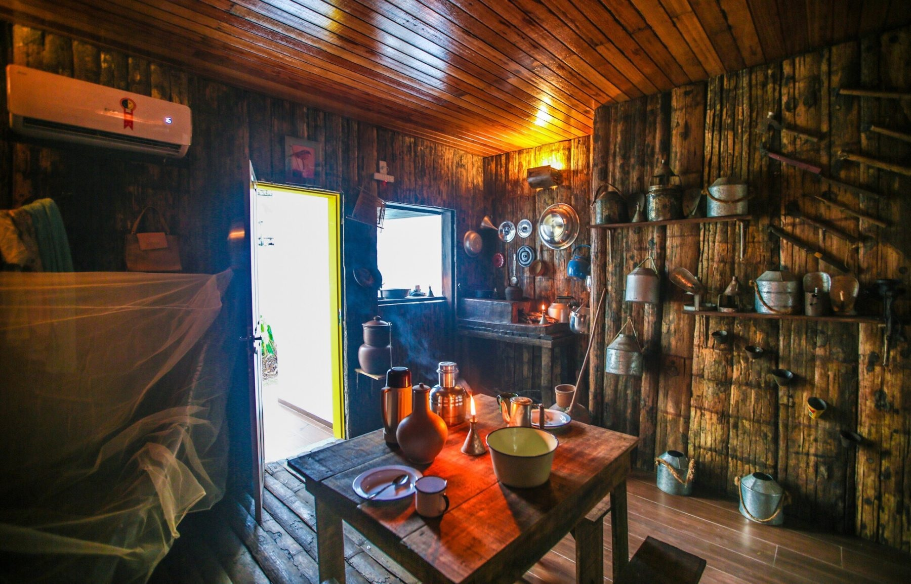
- Localização: Centro de Rio Branco.
- Teatro Plácido de Castro 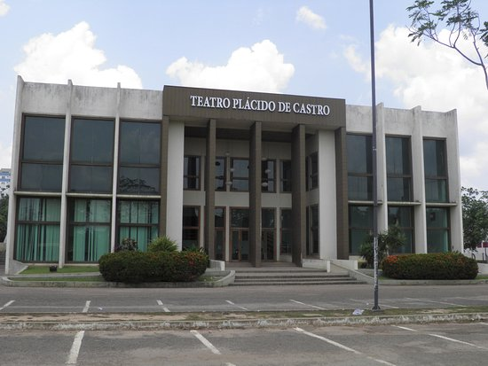
- Localização: Bairro Bosque.
- Centro Cultural Lydia Hammes 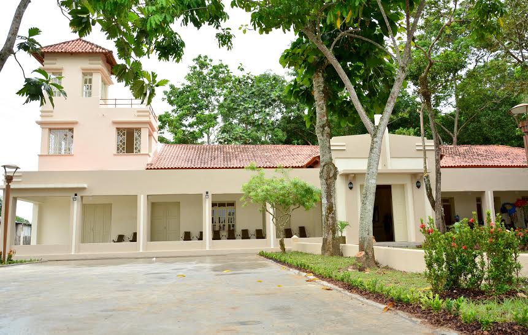
- Localização: Aeroporto Velho.
- Memorial dos Autonomistas 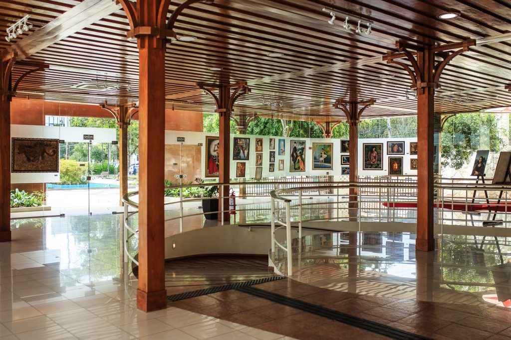
- Localização: Centro de Rio Branco.
O Museu da Borracha é o principal ponto cultural da cidade. Ele preserva a memória da época do ciclo da borracha, trazendo à tona a importância econômica dessa atividade para o Acre e para a Amazônia. O museu conta com exposições de objetos e documentos históricos, além de promover atividades culturais e educativas.
O Teatro Plácido de Castro, também conhecido como Teatro da Opera, é um dos mais importantes espaços culturais da cidade. Inaugurado em 1928, o teatro é palco para apresentações de teatro, dança, música e outras manifestações artísticas. Ele também abriga uma programação de eventos culturais e atividades educativas.
O Centro Cultural Lydia Hammes é um espaço dedicado às artes visuais, com exposições e eventos que promovem a arte e a cultura do Acre. O centro é um local ideal para quem deseja conhecer mais sobre a arte contemporânea da região, com destaque para as produções de artistas locais.
Inaugurado em 20 de setembro de 2002 para mostrar, difundir e preservar a história do Movimento Autonomista do Acre, movimento político responsável pela emancipação do Acre à condição de Estado. No memorial, está o túmulo do líder deste movimento José Guiomard dos Santos e de sua esposa Lídia Hames. No prédio também há uma exposição permanente contando todo o processo histórico dos Autonomistas.
Anexo ao Memorial foi construído o “Theatro Hélio Melo” com capacidade para 150 pessoas, em homenagem ao grande artista acreano.